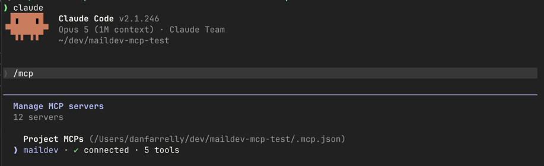
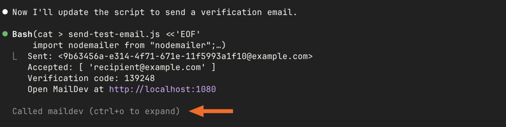
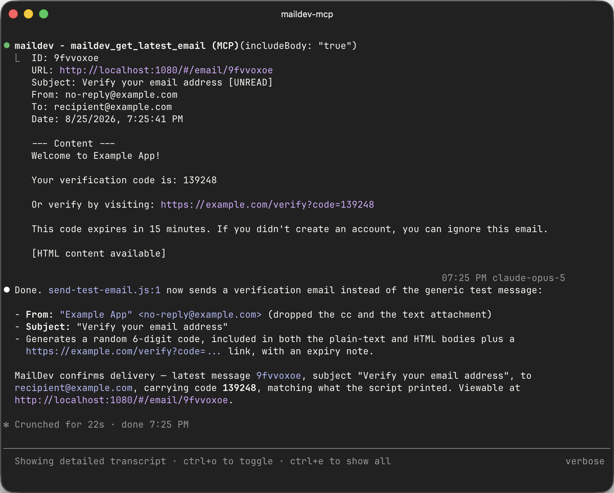

Claude Code walkthrough
A complete development loop with Claude Code driving MailDev over MCP — connect the server, build an email flow, and let the agent verify delivery and follow the link it finds.
This is the whole loop, start to finish: wire MailDev's MCP server into Claude Code, build a signup-verification flow, and let the agent check its own work by reading the email that arrives.
The interesting part is the last step. Without inbox access an agent writes the feature and then hands it back for you to test. With it, the agent triggers the flow, reads the message, extracts the link, follows it, and reports whether the account was actually verified.
What you need #
- Claude Code installed and working in a project
- Node.js 20 or newer
- An app that sends email, or five minutes to add one
1. Start MailDev with MCP enabled #
npx maildev --mcpLeave it running in its own terminal. The inbox is at
http://localhost:1080 and the MCP endpoint at http://localhost:1080/mcp.
2. Register the server with Claude Code #
Add a .mcp.json to your project root:
{
"mcpServers": {
"maildev": {
"type": "http",
"url": "http://localhost:1080/mcp"
}
}
}Committing this file means everyone on the team gets the same setup. Claude Code picks it up on the next start, and asks you to approve the server the first time.
Confirm it connected:
/mcp
/mcp output showing the maildev server connected, with its five tools listed.3. Point your app at MailDev #
Whatever your stack, the settings are the same three: host localhost, port
1025, no auth and no TLS. See the
quick start for your framework, or
Nodemailer if you are on Node.
const transport = nodemailer.createTransport({
host: process.env.SMTP_HOST ?? "localhost",
port: Number(process.env.SMTP_PORT ?? 1025),
});4. Ask for the feature #
Now the actual work. A prompt that sets up the verification loop explicitly:
Add email verification to the signup flow. On
POST /signup, create the user as unverified, generate a single-use token, and send a verification email with a link to/verify?token=…. Then use the maildev MCP tools to confirm the email actually arrives and that the link works end to end.
Claude Code writes the route, the token handling, and the template. The last sentence is what changes its behavior — instead of stopping at "I've implemented this, you should test it", it goes and checks.

maildev_get_latest_email and reporting the verification link it extracted.5. Watch it verify #
A typical sequence, which you can follow in the transcript:
maildev_delete_emailor a REST call to clear the inbox, so the check is deterministic.- A request to
POST /signupwith a test address. maildev_search_emailsfiltered by that recipient.maildev_get_emailfor the full HTML.- Extract the
/verify?token=…URL and request it. - Confirm the user's
verifiedflag flipped.
The same messages are in your browser at http://localhost:1080 the whole time,
so you can look over its shoulder. Responses from the MCP tools include a deep
link (http://localhost:1080/#/email/<id>) that opens the exact message the
agent read.

6. Iterate on the template #
This is where the loop pays for itself. Ask for a change and the agent can confirm the result rather than guessing:
The plain-text version of the verification email is just the HTML with tags stripped, which reads badly. Rewrite it properly, resend, and check both parts in MailDev.
maildev_get_email returns the HTML and the plain-text alternative separately, so
the agent sees exactly what a text-only client would. Broken cid: references,
an empty text part, a subject line with an unrendered template variable in it —
all visible without a human in the loop.
Prompts that work well #
Be explicit about clearing first. An inbox with forty messages from earlier in the session makes "did the email arrive?" ambiguous.
Clear the MailDev inbox, then register
alice@test.comand confirm exactly one email was sent to her.
Ask about the parts, not just arrival. Arrival is the easy half.
Check the latest email: is the plain-text alternative present and readable, do all links use the configured app URL rather than localhost, and is the subject line free of unrendered template variables?
Use it for regression checks. After a refactor of the mail layer:
Trigger each of the four transactional emails, then compare what MailDev received against what the templates should produce. Report anything that changed.
Attachments too.
Generate an invoice for order 1234, then confirm the email has exactly one attachment, that it is a PDF, and that it is not zero bytes.
Where this fits with tests #
An agent reading the inbox is for the development loop — fast, conversational, exploratory. It is not a substitute for assertions that run in CI. Once a flow works, write it down as a test: see testing email in CI for the REST-API patterns, and the programmatic API if you would rather start MailDev in-process.
Other MCP clients #
Nothing here is Claude Code-specific beyond the config file location. Cursor, Codex, Windsurf, and Claude Desktop all connect to the same server — see the MCP guide for each one's configuration path and the stdio transport option.
The MCP server hands an agent the full contents of every message MailDev holds. That is exactly what makes it useful, and exactly why it belongs on your own machine pointed at your own dev inbox — never at anything with real mail in it.